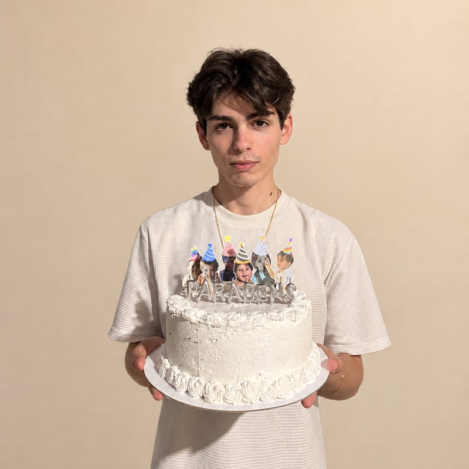

Wager Backend API
Processamento distribuído de apostas com carteiras, ledger e padrão inbox/outbox, com filas SQS (LocalStack) e autenticação via Keycloak.
GoUber FxPostgreSQLSQS
Estudante de Engenharia de Software que constrói APIs e sistemas backend em Go. Procuro estágio ou vaga júnior, inclusive em oportunidades internacionais.
GET /joao // 200 OK { "nome": "João Victor Bontorin", "curso": "Engenharia de Software", "faculdade": "UniBrasil", "foco": "backend", "stack": ["Go", "PostgreSQL", "Docker"], "local": "Colombo, PR", "disponivel": true }

Curso Engenharia de Software na UniBrasil e vim do ensino técnico em Análise e Desenvolvimento de Sistemas. Gosto de backend: modelar dados, desenhar APIs e fazer sistemas continuarem corretos quando algo falha.
Estagiei com dados na CAIXA e hoje dou aulas de inglês na HeyPeppers!, o que me ajuda a explicar ideias técnicas com clareza e a trabalhar em equipes internacionais.
Processamento distribuído de apostas com carteiras, ledger e padrão inbox/outbox, com filas SQS (LocalStack) e autenticação via Keycloak.
API REST em Go com foco em estrutura de projeto limpa, acesso a banco e endpoints bem definidos.
Jogo de xadrez online para duas pessoas, hospedado na Cloudflare.
Site estático com login social, sessão e armazenamento de usuários em banco D1, rodando no Cloudflare Pages.
Aulas de inglês e comunicação com alunos de diferentes níveis.
Estou buscando estágio ou vaga júnior em engenharia de software e backend. Me chame pelo WhatsApp ou LinkedIn, ou veja meu código no GitHub.